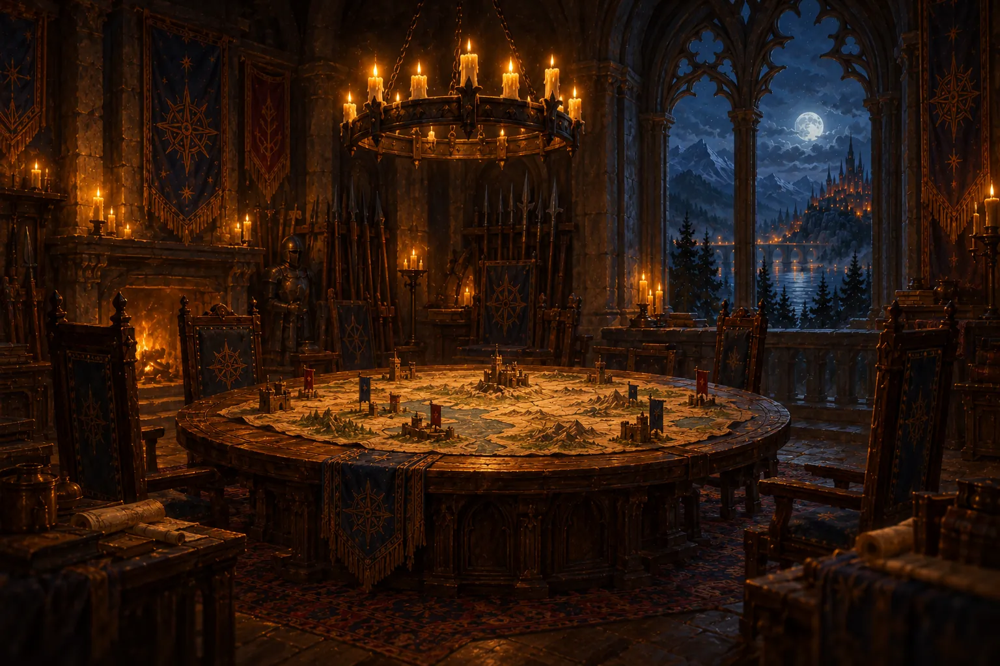

La Cripta di Vetro
4 personaggiMaster: Ottavio
Prossima sessionegiovedì 30 ottobre, 21:00
Sessione
Sessione 8 · Il martello rubato
Sessione 8
Il martello rubato23 ottobre
Cronaca della sessione
La pioggia batteva sulle vetrate della cripta quando il fabbro Orin, con le mani ancora nere di fuliggine, affidò al gruppo una richiesta disperata: ritrovare il martello che gli era stato rubato.
Selene sentì l’eco della magia oltre la soglia; Kaela scivolò nell’ombra senza un rumore. Nella sala dei sarcofagi i goblin attaccarono. Una lama colpì Selene al fianco, ma la benedizione che aveva invocato non vacillò.
Quando Brann abbatté l’ultimo dei piccoli predoni, il loro capo fuggì nel buio gridando: «Non toccate il martello: è maledetto». Le centoventi monete d’oro trovate tra le ossa vennero divise in parti uguali. Ma nessuno, quella notte, osò parlare del martello.
Resoconto automatico e note
Esplorazione21:05
Il fabbro Orin ci chiede di recuperare il martello rubato nella Cripta di Vetro. — nota di Nico
Selene lancia Individuazione del magico come rituale, senza slot
Kaela Furtività 17: passa inosservata
Scontro con i goblin3 round21:40
Selene lancia Benedizione su Selene, Brann e Kaela (slot di 1°)
Un goblin colpisce Selene: 14 danni (31 → 22 punti ferita)
Selene supera il tiro di concentrazione (CD 10): Benedizione resta
«Non toccate il martello: è maledetto» grida il capo goblin prima di fuggire. — nota di Nico
Brann sconfigge il goblin 3 · fine dello scontro
Riposo e bottino22:30
Riposo breve: Selene spende 1 Dado Vita (+7 punti ferita)
Trovate 120 mo: divise tra tutti (30 a testa)